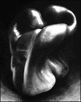

The Minneapolis Institute of Arts
Main Menu ~ Permanent Collection List ~ Interactive Museum Maps ~ Back ~ Next
Harrison Photography Gallery
 (c) 13k
The Institute houses more than 8,000 images from the birth of photography in the 1850s to the present day, including such artists as Ansel Adams, Walker Evans, Edward Weston, Lee Friedlander, Lewis Hine and many others. This collection includes an interactive program.